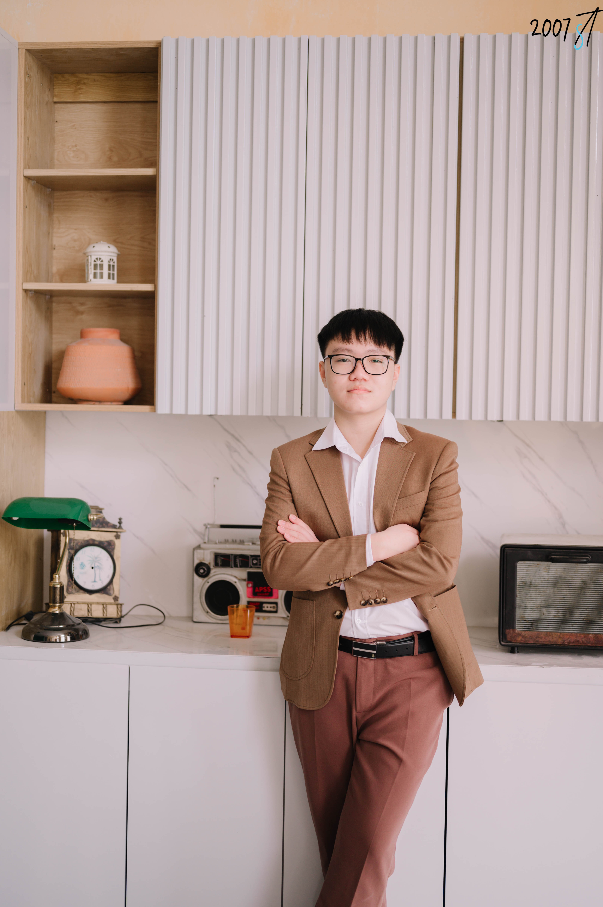

Hello, world. I'm
Phạm Trí Hiếu
Information Assurance Student / Intern
I am interested in malware analysis, digital forensics, information assurance tools, databases, and web technologies. I enjoy learning how systems work and investigating how they can be secured.
portfolio@security:~
$ whoami
Phạm Trí Hiếu
$ cat role.txt
Information Assurance Student / Intern
$ status
Learning. Building. Securing.
01. About
About Me

I am a Information Assurance student building practical experience across malware analysis, digital forensics, database design, and web development.
My current focus is strengthening my technical foundation by working with security tools, analyzing digital evidence, and understanding how software and infrastructure behave.
I also enjoy collaborative projects where I can combine technical problem-solving with communication, planning, and leadership.
02. Skills
Tools & Technologies
Technologies and security tools I have worked with during my studies and projects.
Database
Frontend
03. Projects
Featured Projects
A selection of academic, information assurance, and leadership projects.
01
Information Assurance
Malware Analysis & Digital Forensics
Analyzed suspicious samples in an isolated environment using FlareVM and network analysis tools.
- FlareVM
- Wireshark
- YARA
02
Database
Relational Database System
Designed a structured relational database with an ERD and ten connected entities using SQL Server.
- SQL Server
- ERD
- SQL
03
Leadership
"Sắc Màu Nón Lá" Workshop
Led project coordination, logistics planning, participant communication, and feedback collection systems.
- Leadership
- Planning
- Teamwork